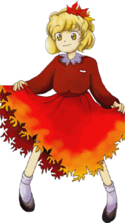

- Welcome to Touhou Wiki!
- Please register to edit. For assistance, check in with our Discord server or IRC channel.
Shizuha Aki
Shizuha Aki akʲi ɕizɯha (♫) Sizuha Aki | |
|---|---|
|
 Shizuha Aki in Mountain of Faith Symbol of Loneliness and DemiseMore Character Titles | |
| Species |
Goddess of autumn leaves |
| Abilities |
Controlling the turning of leaves |
| Location |
Near the Youkai Mountain, Forest of Magic[1] |
Appearances | |
| Official Games | |
| |
| Print Works | |
| |
Shizuha Aki (秋 静葉 Aki Shizuha) is the goddess of autumn leaves and thus have to power to control the turning of the leaves. She is Minoriko Aki's older sister and together they have the ability to control autumn.
General Information[edit]
Shizuha first appeared in Mountain of Faith being a stage 1 midboss. She then later appear as a target in Double Spoiler and in Hopeless Masquerade as a background character.
Personality[edit]
She believes that the autumn colors of the turning leaves are the best thing about autumn, and is filled with a sense of superiority when she shows the beauty of the leaves to her sister. She becomes sorrowful and pessimistic as winter approaches.
Ability[edit]
- Controlling the turning of leaves
Surprisingly, she doesn't use supernatural powers to turn the leaves red. Instead she "paints" them by hand, which is why the colors of the leaves are inconsistent.[1] Fallen leaves are another part of her work. Instead of dropping leaves moderately, she simply kicks on the trees and scatters them roughly.[1][2]
Occupation[edit]
She is the goddess of autumn leaves, and with her sister, who is the goddess of harvest, they control autumn. Together they're not the best at fighting, but when someone is disrupting autumn they punish that person.
It is difficult for her to gather faith, which makes it a bit challenging to distinguish her from a normal youkai. However, goddesses of autumn leaves appear to be pretty rare, so she doesn't have the problem of competition that her sister Minoriko faces.
Character Basis[edit]

Name[edit]
Her name is Shizuha Aki (秋 静葉). The character for Aki (秋) means "Autumn", and Shizuha (静葉) means "quiet" (静) and "leaves" (葉).
Design[edit]
Shizuha has yellow-orange eyes and short blond hair with red autumn leaves in her Mountain of Faith official art. She wears a long red-orange dress with darker red at her middle and arms and more orange towards the bottom and ends with leaf-shaped cut-outs around. There is a white collar at the top of the dress. Under the white collar there is something what resembles a nametag, with three buttons next to it. She has white socks and black shoes.
Story[edit]
Games[edit]
- Mountain of Faith
Shizuha was under the impression that the heroine in Mountain of Faith was coming to disrupt autumn, which prompted her to attack. But she was easily defeated, however, being a mere first-stage midboss.
Spin-offs[edit]
- Double Spoiler
In Double Spoiler, Shizuha appeared as a stage 1 target, where she uses a few spell cards and had Aya Shameimaru and Hatate Himekaidou take photos of her and her danmaku.
- Hopeless Masquerade
Shizuha made a background cameo appearance in Hopeless Masquerade on the Genbu Ravine and Youkai Tanuki Forest stage. She is seen with her sister Minoriko Aki cheering.
Relationships[edit]
Minoriko Aki[edit]
Minoriko is her younger sister. Together they control Gensokyo's fall season. Shizuha often brags about how beautiful she makes the leaves look, but is also jealous about Minoriko's popularity with humans as a harvest goddess.
Spell Cards[edit]
Gallery[edit]

Shizuha's sigil in the Grimoire of Marisa

Shizuha in Symposium of Post-mysticism
Additional Information[edit]
- It makes very much sense for Shizuha to be the older sister who is the goddess of turning leaves as the leaves change in autumn before the harvest.
Fandom[edit]
Official Profiles[edit]
Official Sources[edit]
- 2007/08/17 Mountain of Faith - キャラ設定.txt (official profile)
- 2008/02/09 Silent Sinner in Blue - Chapter 9
- 2009/07/28 The Grimoire of Marisa - Shizuha Aki's Spell Card
- 2010/03/14 Double Spoiler - Stage 1 spellcard comments
- 2010/12/25 Oriental Sacred Place - Chapter 12
- 2012/04/27 Symposium of Post-mysticism
References[edit]
| This page is part of Project Characters, a Touhou Wiki project that aims to write proper descriptions for all official characters of Touhou Project. Please keep the character page guidelines in mind when contributing. |